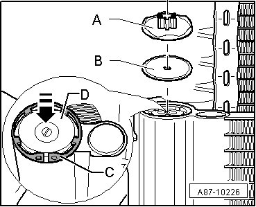
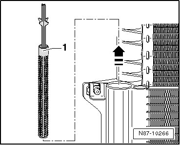
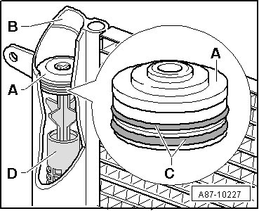

Dryer Cartridge
Refrigerant Circuit
Dryer Cartridge
- Observe notes, refer to --> [ Repairing and Handling Refrigerant ] Repairing and Handling Refrigerant.
Function of fluid reservoir with dryer cartridge
The receiver collects the fluid drops and then directs them in an uninterrupted stream to the expansion valve. Moisture which has entered the refrigerant circuit during repairs will be collected by the dryer cartridge in the receiver.
Removing
• Several engine compartment trims need to be removed depending on VIN.
- Remove rubber cover cap in lock carrier upward.
- 5 and 6 cylinder TDI: Remove Mass Air Flow (MAF) Sensor (G70) connector and remove air filter cover.
- 6-, 8- and 12 cylinder. Remove Brake System Vacuum Pump (V192).
- 10 cylinder. TDI: Remove connector for Intake Air Temperature (IAT) Sensor (G42) and Mass Air Flow (MAF) Sensor (G70) on right side. Remove right air filter cover and charge air line.
- Extract refrigerant circuit, e.g. using A/C Service Station (VAS 6007A), only then open the refrigerant circuit.
- Remove the cover - A - with the seal - B -.

CAUTION!
There is a danger of ice-up.
Refrigerant leaks out if refrigerant circuit is not discharged.
Refrigerant must be extracted before opening the refrigerant circuit. If the refrigerant circuit is not opened within 10 minutes after extracting it, pressure may build up in the circuit again. The refrigerant must be extracted again.
- Press sealing cap - D - into the fluid reservoir in the direction of the arrow
- Loosen the circlip - C - and remove it
- Install one cylinder bolt, M5 thread in the sealing cap threads - D - and remove the sealing cap - D - using pliers on the bolt.

- Pull out dryer cartridge - 1 - in direction of arrow using needle-nose pliers.
Installing
Installation is carried out in the reverse order, when doing this note the following:
- If necessary, clean upper area of inside surface of fluid reservoir - B - and coat it lightly with refrigerant oil.

- Replace sealing cap - A - with o-ring seals - C -.
- Coat the new o-ring seal - C - and new sealing cap - A - lightly with refrigerant oil before installing.
- Install the new dryer cartridge - D -.
• Do not install any dryer cartridge that has been exposed to the air longer than absolutely necessary because it will have absorbed moisture from the air. This includes cartridges that were not stored in their original packaging or whose packaging is damaged.
• A dryer cartridge that is exposed to the air becomes saturated with moisture quickly and becomes unusable.
- Install the sealing cap - D - and secure it with the circlip - C -.
- Re-install remaining components removed.